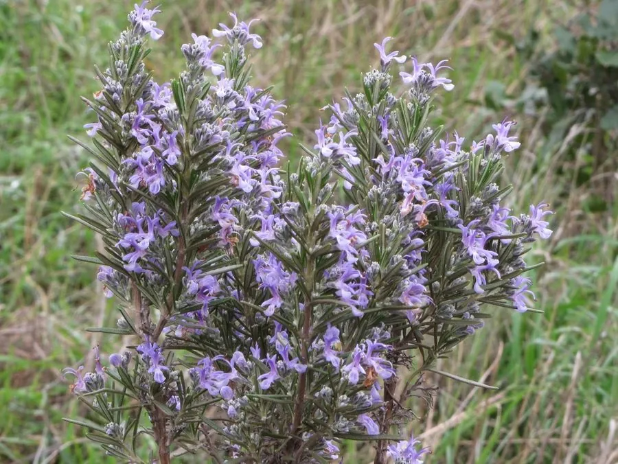

花卉与草本 · 植物界
迷迭香 Salvia rosmarinus

唇形科常绿灌木，叶片针状带松木香气，是地中海料理的经典香草，也常用于提取精油，并用于庭院绿篱与绿化。
- 分类
- 门被子植物门纲木兰纲目唇形目科唇形科属鼠尾草属
- 栖息环境
- 地中海沿岸干燥的石灰岩山坡与灌丛，喜光、耐旱、怕积水
- 地理分布
- 原产地中海沿岸，中国云南、贵州、广西等地有规模化种植
- 保护级别
- 暂无评估
物种志
迷迭香为唇形科鼠尾草属常绿灌木，株高 50–150 厘米，分枝繁密，老枝褐色，树皮纵裂。叶片线形、革质，长 1–2.5 厘米，边缘反卷，叶面深绿有光泽，揉碎后散发松木般的香气。花腋生，唇形，蓝紫色至淡蓝色，花期 4–6 月，果期 6–7 月。
迷迭香原产地中海沿岸的干燥石灰岩山坡，喜阳光充足、温暖干燥和排水极好的环境，耐旱而不耐水涝，冬季可耐短时 -5℃ 左右低温。它是西餐中重要的香草，烤羊排、烤肉和意面中常用；叶片和花可提取精油，用于香水和护发产品。欧洲传统中迷迭香象征记忆与忠诚，婚礼和纪念仪式上常佩戴，莎士比亚在《哈姆雷特》中也有提及。
形态与习性
- 株高50–150 厘米，分枝繁密
- 花期4–6 月，温暖地区可二次开花
- 果期6–7 月，小坚果
- 光照极喜光，每天需 6 小时以上直射光
- 水分耐旱，忌积水烂根
- 土壤疏松、排水良好的石灰质沙壤土
- 主要用途烹饪香草、精油、庭院绿篱
趣味知识
- 迷迭香的学名原为 Rosmarinus officinalis，拉丁语意为“海之露”，后并入鼠尾草属。
- 叶片含迷迭香酸等抗氧化物质，可延缓油脂氧化，常用于烤肉腌料。
- 欧洲传统视迷迭香为记忆的象征，婚礼和纪念仪式上常佩戴。
- 迷迭香开花时是优质蜜源，地中海地区的迷迭香蜂蜜带有淡淡花香。